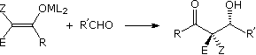

A Chair-Like Transition State for the Aldol Reaction
The aldol reaction shown here often proceeds with good to excellent diastereospecificity. A chair-like transition state, one enantiomer of which is modeled below, is proposed

In this model, carbon atoms are dark gray, hydrogen is cyan, oxygen is red and the metal species M is green. Ligands on the metal are yellow, the E and Z substituents on the enolate are light gray, and other alkyl substituents R are colored tan. The newly forming bonds are colored violet. The oxygen bonds to the metal are an important factor in organizing and stabilizing the transition state. When the metal is lithium, the ligands are often solvent molecules and the bonds to oxygen are long and relatively weak. When the metal is boron, the ligands are alkyl groups and the bonds to oxygen are shorter and stronger. The bonding distance in angstroms for the two carbon-oxygen bonds and the nascent carbon-carbon bond will be shown by clicking the second button under the model.
Clicking the third button will display the product from this transition state. The same bond distances may be viewed again to see the change that has occured.
X
Show Ring Atoms Only (on/off)
X
Show Key Distances (on/off)
X
Show Product Molecule